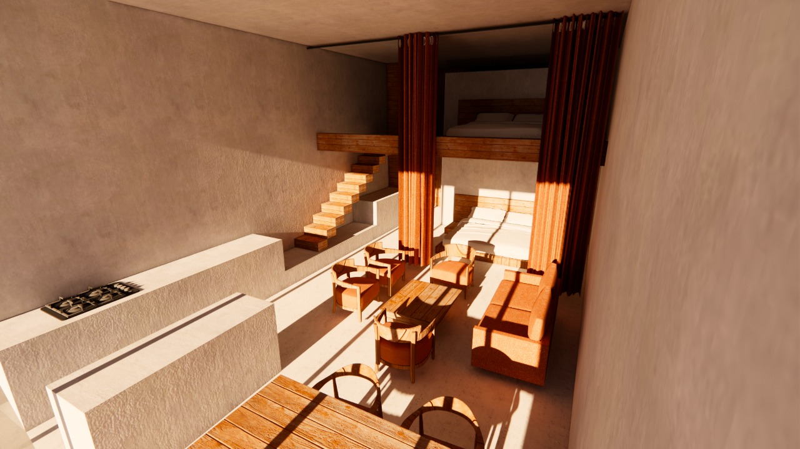
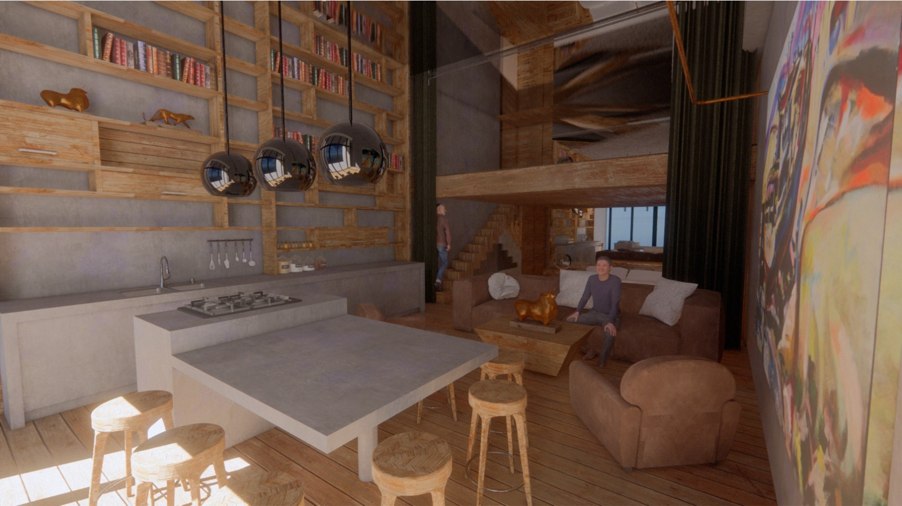

1 Estudio amplio
- Duermen cuatro.
- Una cama matrimonial y dos individuales. Ideal para una familia. Bueno para amistades siempre que sean cercanas porque las habitaciones están en un mismo espacio (es un estudio con tapanco).
- Dos baños completos.
- Piso 17 sobre la playa. Vista inigualable del océano Pacífico, la isla de Todos Santos está en el horizonte.
- Amueblado con todo lo necesario para una estancia de ensueño.
- TV internet audio.
- Estacionamiento.
- Vigilancia 24h.

Figura 1: Vista para entender el espacio a partir de un render (sin los espejos)


 |
 |